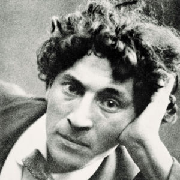
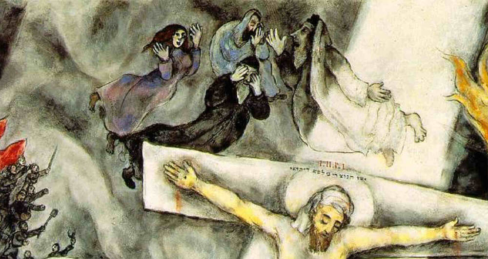
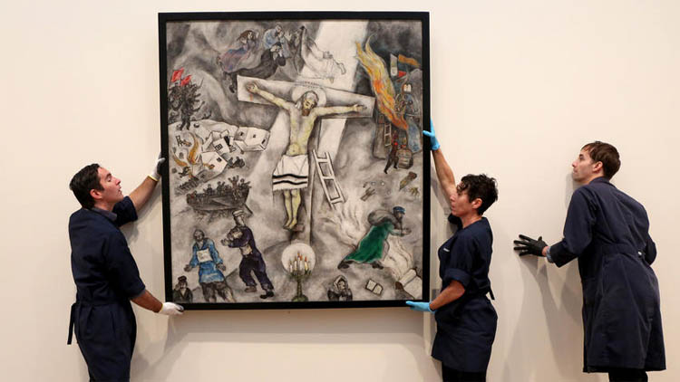

Израиль и Церковь · Библия и художник
За что Папа Франциск любит Марка Шагала?
Одно из творений этого художника Папа считает шедевром такого уровня, на который никогда раньше не поднималось человеческое искусство.
источник katolik.ru

Речь идет об увлечении Франциска искусством Марка Шагала. Одно из творений этого художника Папа считает шедевром такого уровня, на который никогда раньше не поднималось человеческое искусство. Речь идет о картине "Белое распятие".
Отвечая на вопрос журналиста о своих художественных предпочтениях на страницах книги "Иезуит", вышедшей в 2010 году, будущий Папа, назвал эту картину любимой. Он немного рассказал об этом произведении, тем не менее, подчеркнул определенный духовный аспект, который оно выражает.
"Я всегда считал эту картину одной из самых чудесных среди созданных когда-либо и говорил, что мука здесь спокойная и наполненная надеждой",- отметил тогда еще архиепископ Буэнос-Айреса кардинал Хорхе Бергольо.
Действительно "Белое распятие" Марка Шагала считается одной из лучших работ художника. Она была написана в 1938 году, в год "Хрустальной ночи" - серии еврейских погромов, организованных нацистами в ночь с 9 на 10 ноября 1938 года на территории Германии и Австрии. Шагал тогда уже жил во Франции, а картину написал под влиянием этого события.

"Белое распятие" включает в себя всю трагедию еврейского народа: ненависть, преследования, погромы, происходившие на протяжении ХХ столетия. Шагал не стремился нарисовать конкретную сцену, но через символы и образы хотел показать глубину всей драмы. Здесь представлена сожженная синагога, которая символизирует разрушение нацистами мест культа и творений многих евреев, в том числе и Шагала (в 1933 году по личному приказанию Геббельса были уничтожены почти все его работы). Сожженные дома, разбросанная мебель и свитки Торы, мертвые тела, люди, сидящие на земле около разрушенных домов, беженцы, толпа антисемитов с красными коммунистическими флагами. Происходящая трагедия вызывает плач ветхозаветных библейских персонажей, которых Шагал нарисовал в верхней части своей картины. В центре полотна посреди этого хаоса, боли и страданий художник поместил изображение распятого Иисуса Христа, о чем гласит надпись над крестом черным шрифтом на арамейском языке "I.N.R.I."
Интересно, что для того, чтобы передать несправедливость и страдания ни в чем не повинных людей, еврей Шагал использовал именно христианский образ. В лице распятого Христа он представил весь страдающий, "распятый" еврейский народ. Недаром Иисус изображен перепоясанным традиционным белым талесом с черными полосами - частью еврейской литургической одежды. "Мучения Иисуса - это мучения моего народа в те годы",- ответил Шагал на обвинения своих единоверцев в использовании христианских символов.
Еще одной важной деталью любимого произведения Понтифика является луч белого света, который пересекает картину сверху вниз. Верный еврейскому предписанию, запрещающему создавать изображения Бога, художник представил Его в виде белого луча. Свет нисходит на Христа и символизирует уничтожение смерти. Сам Иисус кажется не умершим, но объятым сном. "Мука здесь спокойная и одухотворенная надеждой",- говорил папа Франциск.
Такой образ Христа напоминает евангельский фрагмент, в котором повествуется о буре, испуганных учениках в лодке и Иисусе, спокойно спящем рядом. Именно уверенность в том, что Бог рядом и никогда не оставит, рождает надежду и покой, которого не могут лишить никакие преследования. Папа Франциск не единожды говорил об этом в своих проповедях и речах.

"Белое распятие" не является исключительным случаем использования Шагалом библейских образов. Он часто черпал вдохновение для своих художественных произведений именно в Библии. "Библия с детства завораживала меня. Она всегда казалась мне - и до сих пор кажется - величайшим источником поэзии, на все времена (...)Я всегда пытался отразить это в моей жизни и искусстве",- говорил Шагал.
В период между 1935-1956 годами художник создал цикл работ под общим названием "Библейское послание", которые сегодня хранятся в Музее современного искусства в Ницце. Ядро экспозиции составляют 17 больших полотен, 194 гравюры и гуаши, представляющие сцены из книги Бытия, Исхода, Песни Песней царя Соломона, а также скульптуры, мозаики, витражи. Шагал говорил: "Я решил оставить их в этом доме, чтобы люди всегда могли прийти сюда и попытаться найти в них утешение, некий покой, некую духовность, проникнуться религиозным чувством и, может быть, обрести смысл жизни". Передавая картины в дар музею, он отмечал что "хотел нарисовать мечту о мире всего человечества". "Может быть, молодые и не столь молодые будут приходить в этот дом, желая найти идеал братства и любви, о котором согласно мечтали мои цвета и линии. И может быть, там не будет больше вражды (…) И каждый, какую бы веру он ни исповедовал, сможет прийти в этот дом и поделиться своей мечтой - не смущаясь, потому что все зло останется далеко за его стенами. Осуществима ли эта мечта? Но ведь в искусстве, как и в жизни, нет ничего невозможного, главное - чтобы в основе была любовь", - подчеркивал Шагал.

Как и Папа Франциск, художник любил повторять слова святого Бенедикта: "работать и молиться". Благодаря этой молитве появились чудесные образы глубоко проникнутые духовностью.